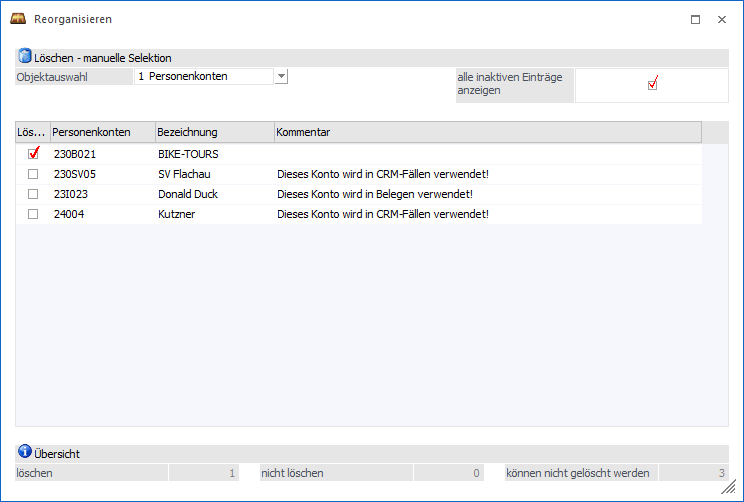

In diesem Fenster werden alle Datensätze des Typs "Stammdaten" angezeigt, die im Zuge des Reorgs gelöscht werden sollen. In einer Tabelle kann entschieden werden, welche Datensätze nun wirklich gelöscht werden sollen.
Hinweis
Das Fenster wird automatisch geöffnet, wenn im Programm Reorganisieren die Option manuelle Selektion", sowie ein Stammdatenbereich, gewählt wurde.

Ø Objektauswahl
In der Auswahlliste werden alle Stammdaten angezeigt, für die ein Reorg erfolgen kann. Abhängig von dieser Auswahl werden die passenden Datensätze in der Tabelle angezeigt.
Ø alle inaktiven Einträge anzeigen
Ist diese Option aktiv, so werden alle Datensätze angezeigt - auch jene, die im Zuge des Reorgs nicht gelöscht werden können (z.B., weil ein Konto bebucht wurde).
Ø Tabelle
In der Tabelle werden alle zu reorganisierenden Datensätze, gemäß Objektauswahl, angezeigt. Durch aktivieren der Checkbox "Löschen" kann entschieden werden, welche Datensätze endgültig gelöscht werden sollen. In der Spalte "Kommentar" wird wiederum angezeigt, warum ein Datensatz nicht reorganisiert werden kann.
Buttons
Ø Ok
Durch Anklicken des Buttons "Ok" bzw. der Taste F5 wird der Reorg für die Stammdatenbereiche, entsprechend der vorgenommenen Auswahl, gestartet. Abschließend kann über den Bereich "Statusbericht" ein Protokoll ausgegeben werden.
Ø Ende
Durch Drücken des Buttons "Ende" bzw. der Taste ESC wird das Fenster geschlossen und kein Reorg durchgeführt.
Ø Mandantenselektion
Der Button steht an dieser Stelle nicht zur Verfügung.
Ø Hauptfenster
Der Button steht an dieser Stelle nicht zur Verfügung.